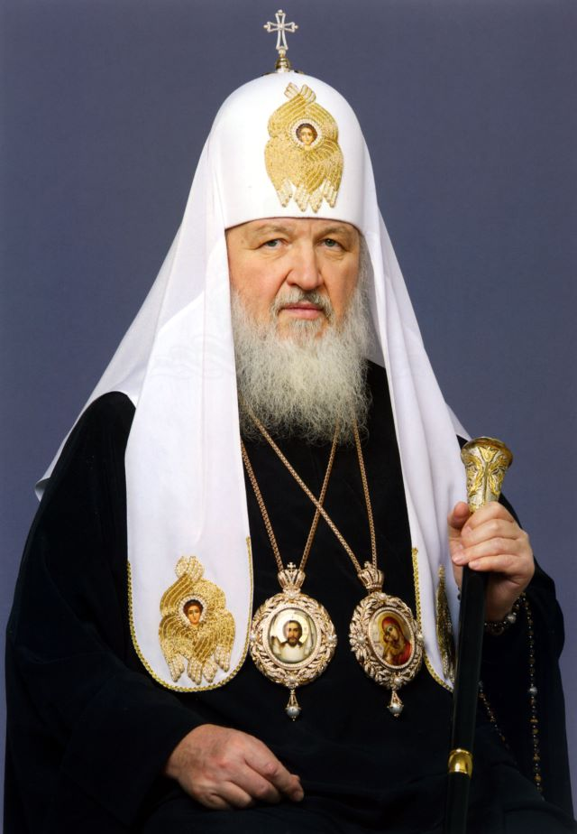

The cross on war. God as an instrument of state narrative.

Vladimir Gundyayev became a monk in 1969, taking the name Kirill. Over five decades he rose from seminary student to Patriarch of All Russia. Since 2009 he has led the ROC — an institution with 100 million faithful. After 24 February 2022 he turned the pulpit of Christ into a war platform: blessing soldiers, calling death in Ukraine "martyrdom", and the war itself a "metaphysical struggle" against Western values.
Born into a priest's family. His grandfather was a martyr-saint; his father, a priest. The family survived the Siege of Leningrad. Religious upbringing from childhood.
Takes monastic vows, ordained as deacon then priest. A rapid church career under the patronage of Metropolitan Nikodem (Rotov).
Leads the Department for External Church Relations — the ROC's key diplomatic body. Builds state relationships, develops the "Russian World" doctrine. Regular participant at Davos and high-level negotiations.Факт
Elected by the Local Council after the death of Patriarch Alexy II. Actively promotes the "Russian World" concept as a distinct Orthodox civilisation encompassing Russia, Ukraine and Belarus.
Does not condemn the annexation after the seizure of Crimea. The "Russian World" concept is used as theological justification for territorial claims. The Ukrainian Orthodox Church comes under pressure.Интерпр.
Three days after the full-scale invasion begins, he celebrates the liturgy at the Cathedral of Christ the Saviour and declares that "today a struggle is taking place that has not a physical but a metaphysical significance." He never uses the word "war".Факт
On Forgiveness Sunday delivers a sermon linking the war to Ukraine's refusal to hold "gay pride parades": "eight years of attempts to destroy what exists in Donbas." The words make headlines worldwide.Факт
The United Kingdom imposes personal sanctions. Canada, Australia and Switzerland follow. The EU's attempt to sanction him is blocked by Hungary. Kirill is the only Orthodox patriarch ever to have been placed under Western sanctions.Факт
Following the announcement of mobilisation declares: "A person who dies fulfilling their military duty performs an act that places them alongside the martyrs." The words draw widespread condemnation.Факт
Kirill wields a unique instrument — the authority of a Church with two thousand years of history and hundreds of millions of faithful. War is translated into the sacred: not a political decision but God's will; not aggression but the defence of Orthodox civilisation. This rhetoric removes moral responsibility from soldiers and makes resistance to the war an act of apostasy. Интерпр.
The "Russian World" concept is theological justification for imperial claims: Ukraine, Belarus and Russia form a single spiritual space that cannot be divided by state borders. This directly denies Ukrainian national and religious identity. Интерпр.
The key distinction from other propagandists: Kirill does not demand political loyalty from his audience — he demands faith. Faith cannot be fact-checked.
United Kingdom — imposed 21 July 2022. Official statement of reasons: "Patriarch Kirill publicly supports and justifies Russia's military actions against Ukraine. He regularly makes speeches legitimising aggression, using his religious authority."
Canada — imposed in 2022 under the Special Economic Measures Act. Australia — imposed in 2022. Switzerland — imposed in 2022 as part of the Russia sanctions package.
European Union — the attempt to include Kirill in the 6th sanctions package (May–June 2022) was blocked by Hungary under pressure from Viktor Orbán. Kirill is the only Orthodox patriarch against whom Western sanctions have ever been imposed.
All statements are based on open public sources. Факт — прямые первичные источники. Интерпр. — авторская интерпретация.